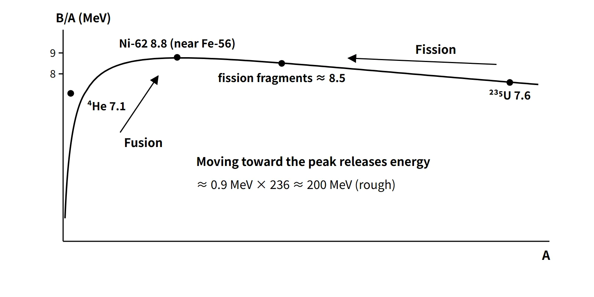

Reactor Physics & Kinetics · C-RX-026
Binding Energy per Nucleon — the Ni-62 Peak and the Origin of Fission and Fusion Energy
Why B/A peaks near A ≈ 60, how moving toward the peak releases about 200 MeV per fission or 17.6 MeV per D-T fusion, and why U-235 is fissile but U-238 is not.
Binding energy is the energy needed to pull a nucleus completely apart into its nucleons, equal to the mass defect times c². Divided by the mass number, the binding energy per nucleon (B/A) is largest near A ≈ 60 (maximum Ni-62, 8.79 MeV) and falls off on both sides, so heavy nuclei release energy when they split (fission) and light nuclei when they combine (fusion).
Principle and mechanism
Mass defect and binding energy
The mass of a nucleus is smaller than the sum of the masses of its nucleons. This difference is the mass defect Δm, and the binding energy is
B(Z, A) = [Z·M(¹H) + N·mn − M(neutral atom)]·c², with 1 u·c² = 931.494 MeV
Using atomic masses, the electron masses cancel on both sides. For U-235, for example, B = 1,783.9 MeV and the mass defect is 1.915 u (about 0.8 % of the atomic mass). A large binding energy does not mean that the nucleus "holds" a lot of energy; it means the nucleus is that much lighter and more tightly bound.
The B/A curve: the peak is Ni-62
Values read directly from the AME2020 mass table:
| Nuclide | ²H | ⁴He | ¹⁶O | ⁵⁶Fe | ⁶²Ni | ¹⁴¹Ba | ⁹²Kr | ²³⁵U | ²³⁸U |
|---|---|---|---|---|---|---|---|---|---|
| B/A (MeV) | 1.11 | 7.07 | 7.98 | 8.790 | 8.795 | 8.33 | 8.51 | 7.59 | 7.57 |
The nucleus with the largest B/A is Ni-62 (8.7946), followed by Fe-58 (8.7923) and Fe-56 (8.7904). The textbook phrase "maximum near iron" reflects the fact that these three nuclei lie within 0.005 MeV of each other. The nucleus with the smallest mass per nucleon, however, is Fe-56, because Ni-62 has a higher neutron fraction and neutrons are heavier than protons. On the light side, He-4 (7.07 MeV) stands well above its neighbours (He-3 2.57, Li-6 5.33) because it is an even-even, doubly magic nucleus.
![Binding energy per nucleon from 0 to 9 MeV against mass number from 0 to 250, with 249 AME2020 evaluated points and a semi-empirical mass formula curve; labels at deuterium 1.11, helium-4 7.07, iron-56 8.790, nickel-62 8.795 (maximum), krypton-92 8.51, barium-141 8.33 and uranium-235 7.59; fission arrows from U-235 to the fragments and a fusion arrow from D plus T to helium-4; a close-up of the peak shows Fe-56 8.7904, Fe-58 8.7923, Ni-60 8.7808 and Ni-62 8.7946; side cards give the binding energy formula, B of U-235 equal to 1,783.9 MeV, a prompt fission Q of 173.3 MeV rising to 199.3 MeV after seven beta decays, and a D-T fusion Q of 17.59 MeV](../../assets/images/concepts/c-rx-026-binding-energy-per-nucleon/fig1-binding-energy-curve.webp)
The semi-empirical mass formula: why the middle is highest
The Weizsäcker formula (SEMF), based on the liquid-drop model, explains the shape of the curve with five terms:
B = av·A − as·A2/3 − ac·Z²/A1/3 − aa·(A − 2Z)²/A + δ
Coefficients (Lamarsh, 3rd edition, Section 2.12): av 15.56, as 17.23, ac 0.697, aa 23.285 MeV; δ = ±12/√A MeV (+ for even-even, − for odd-odd, 0 for odd A; the 12.0 MeV in Lamarsh's table is applied in the common ap/√A form).
| Term | Physical meaning | Fe-56 (MeV/nucleon) | U-235 (MeV/nucleon) |
|---|---|---|---|
| Volume | Saturation of the nuclear force (bonds only with nearest neighbours) | +15.56 | +15.56 |
| Surface | Missing bonds of surface nucleons | −4.50 | −2.79 |
| Coulomb | Repulsion between protons | −2.20 | −4.07 |
| Asymmetry | Pauli penalty for N ≠ Z | −0.12 | −1.10 |
| Pairing δ/A | + even-even, − odd-odd | +0.03 | 0 (odd A) |
| Sum (calculated / measured) | 8.77 / 8.79 | 7.60 / 7.59 |
The surface term cuts B/A for light nuclei and the Coulomb term for heavy nuclei, so the maximum lies in between. With these coefficients, following the β-stability line, the curve peaks at A = 62 (8.76 MeV). For A ≳ 20 the formula agrees with measurement to about 1 %, but light nuclei such as He-4 (calculated 5.77) and magic-number nuclei deviate because shell effects are missing.
Why fission and fusion release energy
If the total binding energy of the products is larger than that of the reactants, mass decreases by the difference and energy is released (Q = ΣBproducts − ΣBreactants; a free neutron has B = 0).
- Fission: U-235 (7.6) → fission fragments (about 8.5). Roughly (8.5 − 7.6) × 236 ≈ 210 MeV. Computing ²³⁵U + n → ¹⁴¹Ba + ⁹²Kr + 3n with AME2020 gives a prompt Q = 1,174.0 + 783.2 − 1,783.9 = 173.3 MeV. When the two fragments reach the stable nuclei ¹⁴¹Pr and ⁹²Zr through seven β⁻ decays, a further 26.0 MeV is released, for a total of 199.3 MeV (including antineutrinos). Of this, the binding-energy difference is only 20.5 MeV; each time a neutron turns into a proton, (mn − mH)c² = 0.78 MeV is added (which is why reactions that change Z must be computed from atomic-mass differences). Averaged over the distribution of product pairs, about 207 MeV is released and about 200 MeV is recoverable.
- Fusion: ²H + ³H → ⁴He + n, Q = 17.59 MeV. Because it climbs the steep left side of the curve, it gives 3.5 MeV per nucleon, about four times fission (about 0.85 MeV per nucleon). Per reaction, fission yields about 11 times more. Overcoming the Coulomb barrier requires a plasma above 100 million K.
Binding energy of the added neutron vs critical energy: fissile and fissionable
The excitation energy of the compound nucleus formed by neutron absorption is E* = Sn + incident kinetic energy (centre-of-mass frame), where Sn = B(A+1) − B(A) is the binding energy of the added neutron. Fission becomes possible only when E* exceeds the fission barrier, the critical energy Ecrit (and even then it competes with capture with γ emission).
| Target + n | Compound nucleus | Sn (AME2020) | Ecrit (Lamarsh Table 3.3) | Difference | Class |
|---|---|---|---|---|---|
| U-235 | U-236 (even-even) | 6.55 | 5.3 | +1.2 | Fissile (thermal neutrons) |
| U-238 | U-239 (even-odd) | 4.81 | 5.5 | −0.7 | Fissionable (fast) |
| Pu-239 | Pu-240 | 6.53 | 4.0 | +2.5 | Fissile |
The difference comes from the pairing effect. A neutron entering an odd-N target (U-235, N = 143) completes a pair and is strongly bound; the added neutron of an even-N target (U-238) is unpaired. Even the SEMF splits Sn into 6.76 versus 4.83 MeV, of which about 1.6 MeV (2δ) is the pairing share. In the simple barrier model the shortfall is about 0.7 MeV, but the practical threshold at which the fission cross-section becomes significant is about 1 MeV. That is why U-238 fissions only with fast neutrons, and instead is a fertile material that becomes Pu-239 by capture and subsequent decay.
![Left: band chart in MeV per nucleon against mass number showing the volume term at 15.56 minus surface, Coulomb and asymmetry losses, leaving the calculated B/A curve, with value boxes for Fe-56 (surface minus 4.50, Coulomb minus 2.20, asymmetry minus 0.12, pairing plus 0.03, calculated 8.77, measured 8.79) and U-235 (minus 2.79, minus 4.07, minus 1.10, 0, calculated 7.60, measured 7.59). Right: liquid-drop shapes stretching toward scission with a deformation-energy curve marking the barrier height, and bars comparing S_n 6.55 MeV with E_crit 5.3 MeV for U-235 plus n (plus 1.2 margin, fissile) and S_n 4.81 MeV with E_crit 5.5 MeV for U-238 plus n (minus 0.7 short, fissionable with a practical threshold of about 1 MeV)](../../assets/images/concepts/c-rx-026-binding-energy-per-nucleon/fig2-semf-fission-barrier.webp)
What it means in a plant
- Fuel design: a fissile nuclide that splits with thermal neutrons is needed, so light water reactors (OPR1000, APR1400) use uranium enriched to about 3–5 wt%, while heavy-water reactors (CANDU) use natural uranium thanks to their moderating efficiency.
- Role of U-238: fast fission contributes to the fast fission factor ε, and conversion to Pu-239 supplies a substantial part of the power late in the cycle.
- Power and burnup conversion: the roughly 200 MeV per fission that comes from the binding-energy difference is the basis for converting between thermal power, fission rate and burnup.
- Decay heat: fission fragments inherit the parent's N/Z (about 1.55) and are neutron-rich, so they approach the stability line by β⁻ decay and release the gain in binding energy as β and γ radiation. This is the origin of decay heat after shutdown (about 6–7 % immediately after) and a design input for the ECCS and residual heat removal.
Regulatory and reference data
| Basis | Key point |
|---|---|
| IAEA Statute, Article XX | Special fissionable material = Pu-239, U-233, uranium enriched in U-235 or U-233 |
| AME2020 (Chinese Phys. C 45, 030003, 2021) | Standard atomic mass evaluation (previous edition AME2016) |
| CODATA 2018 | 1 u = 931.494 MeV/c² |
No regulation deals with binding energy itself; whether a nuclide is fissile is the physical basis for nuclear material control and safeguards classification (for example, the IAEA Statute's definition of special fissionable material). Changes between mass-table editions (AME2003 → 2020) are at the keV level and do not affect the values used here.
Easily confused pairs
| Binding energy B | B/A | Separation energy Sn | Critical energy Ecrit | |
|---|---|---|---|---|
| Definition | Energy for complete break-up | B ÷ A | Removal of the last neutron | Height of the fission barrier |
| Values (U-235 family) | 1,784 MeV | 7.59 MeV | 6.55 MeV (U-236) | 5.3 MeV (U-236) |
| Use | Mass-defect calculations | Stability comparison, reaction Q | Compound-nucleus excitation | Fissile test |
| Common mistake | Reading it as stored energy | Asserting the maximum is Fe-56 | Confusing it with B/A | Comparing Sn with the wrong quantity |
Another pair is fissile / fissionable / fertile. U-235 and Pu-239 are the first two; U-238 is the last two.
Key points at a glance
- Definition: energy needed to separate a nucleus into its nucleons = mass defect × c²; B = [Z·M(¹H) + N·mn − M]c².
- B/A curve: maximum near A ≈ 60 (Ni-62 8.79 MeV, Fe-56 8.79 close behind); U-235 7.59; He-4 stands out at 7.07.
- SEMF: volume − surface − Coulomb − asymmetry ± pairing; surface lowers B/A for light nuclei, Coulomb for heavy ones.
- Fission: 7.6 → 8.5 MeV, roughly 0.9 × 236 ≈ 200 MeV per fission.
- Fusion: D-T 17.6 MeV, 3.5 MeV per nucleon (about four times fission); Coulomb barrier → hot plasma.
- Critical energy: Sn(U-236) 6.5 > Ecrit 5.3 → thermal-neutron fission (fissile).
- U-238: Sn 4.8 < 5.5 → needs fast neutrons above about 1 MeV (fissionable, fertile).
- Pairing: odd-N target + n → even-even compound nucleus with large Sn.
- Decay heat: β⁻ decay of neutron-rich fission fragments (Q = ΔB + 0.78 MeV per decay) → heat after shutdown.
